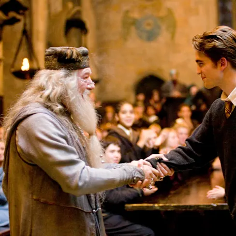
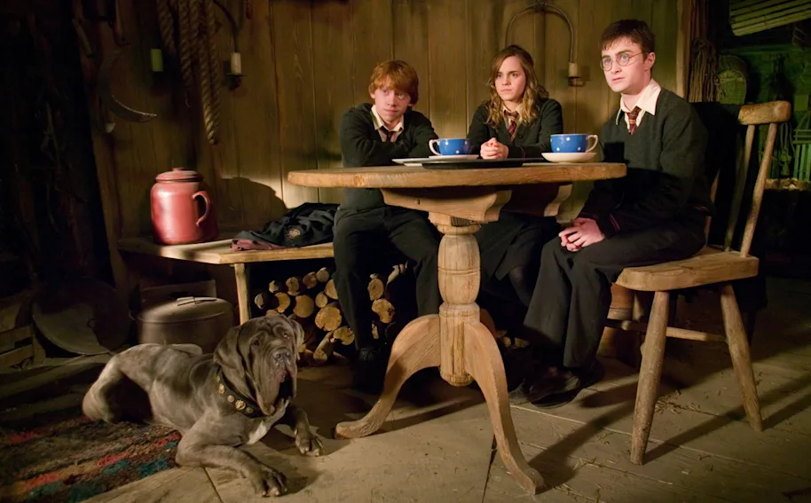
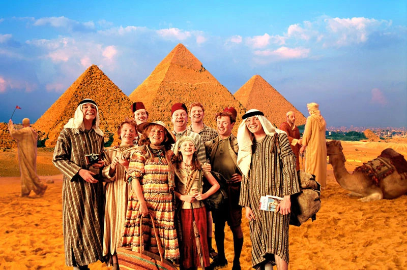
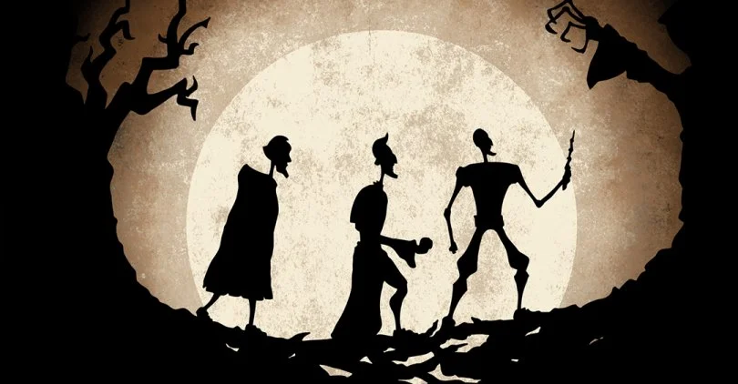
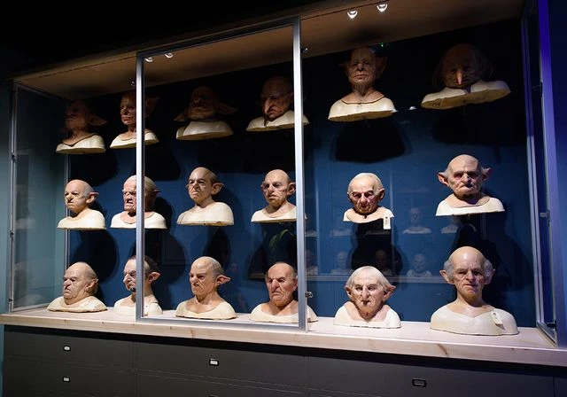

Bienvenue dans l’Encyclopédie du Monde Magique. Ici, tout est écrit à la main, pour plonger au cœur de l’univers d’Harry Potter et ressentir la magie de chaque mot, chaque parole.
L’Encyclopédie est organisée en quatre colonnes pour vous guider dans votre exploration du monde des sorciers. La première, Thème, indique la grande catégorie à laquelle appartient chaque élément — qu’il s’agisse de personnages, de lieux ou encore de sortilèges. La deuxième, Chapitre, rassemble les sous-parties ou sections qui se rattachent à ce thème. Vient ensuite Nom, où figure le titre précis de l’élément que vous souhaitez découvrir. Enfin, la colonne Description vous offre une explication détaillée, enrichie d’anecdotes et de références à la saga. Explorez, redécouvrez, et laissez la magie des mots vous replonger dans l’univers enchanteur des sorciers.

Lors du repas de Noël dans la Grande Salle, dans Harry Potter et le Prisonnier d’Azkaban, Sybille Trelawney s’affole en voyant treize personnes à table et prédit un sort tragique pour celui qui se lèvera en premier. En réalité, ils sont quatorze, car Croutard (Queudver) est caché dans la poche de Ron. Harry et Ron peuvent donc quitter la table sans danger. Plus tard, lorsque Dumbledore se lève pour saluer Trelawney, il ne reste plus que treize convives, et c’est lui qui fera face au destin funeste annoncé.
Harry Potter et J.K.Rowling partagent la même date d’anniversaire : le 31 juillet. Quant au nom de famille « Potter », il semble s’inspirer d’une famille voisine de celle de l’auteure lorsqu’elle vivait sur Nicholls Lane à Winterbourne. Rowling jouait avec Ian et Vikki Potter et a toujours apprécié ce nom, ce qui montre que certains éléments personnels ont influencé la création de son univers magique.
Lors d’une interview avec Emma Watson, l’actrice incarnant Hermione Granger, J.K. Rowling a admis que la romance entre Ron et Hermione était en fait une erreur. Selon elle, cette relation reflétait davantage un choix personnel ou un souhait qu’une logique narrative solide. L’auteure estime qu’il aurait été plus crédible d’unir Hermione et Harry. Plus récemment, Rowling a précisé que Harry et Ginny ne sont pas forcément de véritables âmes sœurs, tandis que Ron et Hermione se complètent : Hermione apporte sensibilité et maturité, alors que Ron lui apporte la décontraction qui lui manque. Malgré cette complémentarité, Rowling plaisante sur le fait qu’ils auraient tout de même besoin d’une thérapie de couple.

En réalité, l’animal favori de J.K. Rowling est la loutre, ce qui explique que le Patronus d’Hermione prenne cette forme. Curieusement, le Patronus de Ron est un Jack Russell Terrier, un chien connu pour sa capacité à chasser… les loutres. Cette petite touche d’humour montre que même les créatures magiques suivent une certaine logique. Et toi, quel serait ton animal préféré à Poudlard ?

En développant sa saga, J.K. Rowling a souvent modifié l’intrigue et les dénouements, et certaines idées surprenantes ont failli bouleverser la famille Weasley. À un moment, elle avait même envisagé de faire mourir Ron pour rompre le célèbre trio Harry–Hermione–Ron. Avec le recul, elle reconnaît que cela aurait été impossible, mais à l’époque, cette idée reflétait une pointe de méchanceté liée à sa situation personnelle. Le père de Ron n’était pas non plus totalement épargné : Rowling voulait que la famille Weasley participe activement à la bataille finale contre le maître des ténèbres, et il aurait été réaliste que certains y laissent la vie. Finalement, c’est Fred qui a été choisi pour mourir plutôt que Mr. Weasley, car tuer le père aurait profondément affecté Ron et altéré son humour légendaire. Quant à Tonks et Lupin, leur mort n’était pas initialement prévue, mais l’auteure souhaitait conclure certains arcs et réinitialiser l’histoire avec un enfant orphelin, vivant dans un monde plus paisible. Ainsi, si Harry et Neville grandissent sans famille véritable, Teddy Lupin bénéficie d’un parrain attentif et de nombreux soutiens, symbole d’un avenir plus prometteur.
Certains fans de la saga le savent peut-être : J.K. Rowling a rédigé l’épilogue, le dernier chapitre où l’on découvre Harry adulte et sa vie après la bataille finale, dès 1990. Incroyable, non ? Cela signifie qu’elle avait imaginé la conclusion de son histoire sept ans avant la publication du premier tome, Harry Potter à l’école des sorciers. Une prévoyance impressionnante… même si, à l’époque, certains lecteurs ont été légèrement déçus par cette fin. Pour Rowling, pourtant, c’était indispensable : elle savait exactement où elle voulait guider son univers, du début à la fin.
Rappelez-vous l’histoire des trois frères Peverell et des célèbres Reliques de la Mort. La cape d’invisibilité qu’Harry possède lui a été transmise de génération en génération depuis son arrière-arrière… arrière-grand-père, Ignotus Peverell. De la même manière, la bague de résurrection a voyagé au fil des siècles jusqu’à arriver dans la famille Gaunt. Et voici un petit twist surprenant : Elvis Gaunt est le grand-père de Tom Jedusor, alias Voldemort. Autrement dit, Harry et Voldemort seraient en réalité des cousins très éloignés ! J.K. Rowling explique également que, dans le monde des sorciers de sang pur, les lignées se croisent constamment, de sorte que presque tous ces sorciers partagent un lien de sang à un moment ou à un autre. Une révélation qui montre que, dans cet univers, la magie se transmet aussi au sein des familles… parfois de façon inattendue.

Les Détraqueurs, ces créatures sombres qui aspirent l’âme des sorciers, ne sont pas seulement des monstres imaginaires. Ils représentent en réalité la dépression que J.K. Rowling a vécue à un moment de sa vie. Comprendre cela permet de mieux saisir ce que ressentent les personnages lorsqu’ils sont attaqués : les Détraqueurs se nourrissent de leur bonheur et laissent place à un profond désespoir, ce vide intérieur qui glace et paralyse. C’est la manière pour l’auteure de transformer une expérience personnelle en une leçon de magie… mais aussi d’humanité.

Pour donner vie à l’univers d’Harry Potter à l’écran, l’équipe de production a dû déployer une logistique impressionnante. Harry lui-même a porté près de 160 paires de lunettes et utilisé 80 baguettes différentes au fil des huit films. La bibliothèque de Dumbledore, majestueuse à l’écran, était en réalité remplie de plus de 5 000 livres… tous des bottins téléphoniques recouverts de cuir et de poussière. La boutique de baguettes d’Ollivander alignait quant à elle 17 000 boîtes, toutes étiquetées à la main. Le trésor des Lestrange, protégé par un sort de duplication, a multiplié chaque objet, totalisant 38 000 pièces dans la salle, dont 7 000 coupes dorées. Côté maquillage, un masque de Gobelin nécessitait huit heures de travail, dont presque la moitié directement sur l’acteur, et Daniel Radcliffe n’était pas en reste : plus de 6 000 éclairs ont été dessinés sur son front ou sur ceux de ses doublures. Enfin, pour donner vie à Hagrid, Robbie Coltrane a porté six perruques différentes pour sa barbe, restant fidèle à l’image du personnage telle que décrite dans les livres.
Le rôle de Luna Lovegood, cette jeune fille un peu excentrique et attachante, est interprété à l’écran par l’actrice irlandaise Evanna Lynch. Mais l’histoire de son casting est tout aussi fascinante que le personnage lui-même. Quelques années avant d’obtenir le rôle, Evanna traversait une période très difficile, souffrant d’une anorexie sévère. Une lettre de J.K. Rowling lui a donné de l’espoir : si elle réussissait à surmonter sa maladie, elle pourrait tenter le rôle de Luna et recevoir des conseils précieux de l’auteure. Lors du casting, Evanna s’est distinguée parmi 15 000 candidates grâce à sa créativité et son souci du détail, recréant à la main certains bijoux évoqués dans les livres, convainquant ainsi l’équipe qu’elle était la bonne pour incarner Luna à l’écran.